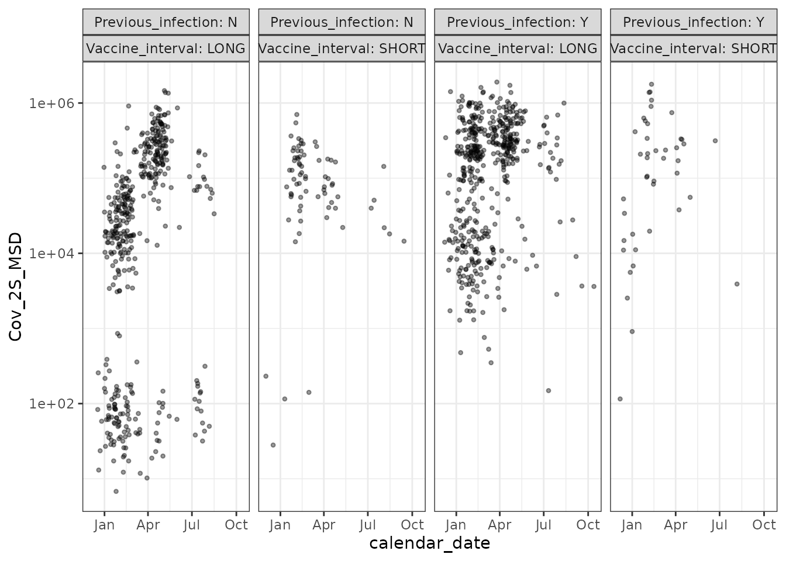
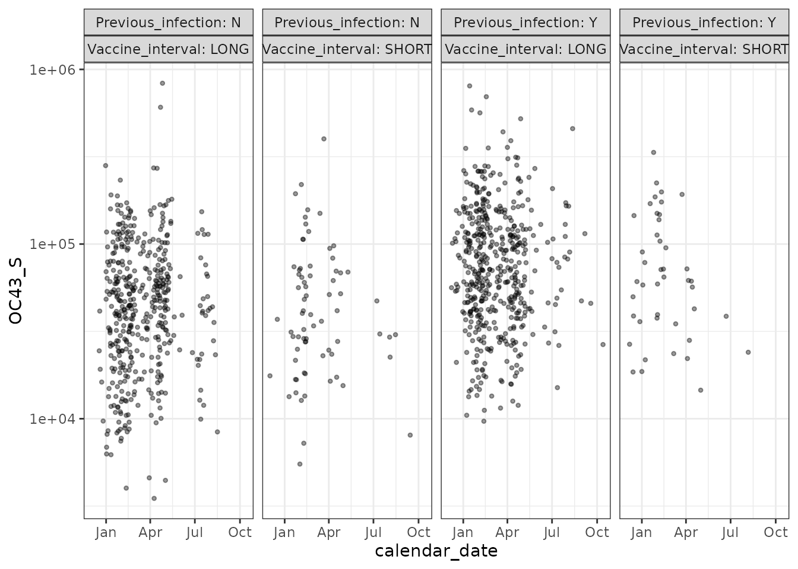

Chronogram assembly from SQL
SQL_assembly.RmdIntroduction
Here we build a chronogram from an SQL database. We use an example derived from the de-identified PITCH dataset available here, under a CC-BY-4.0 licence: https://data.mendeley.com/datasets/fyp26zjgmj/1 Published: 3 November 2021, DOI: 10.17632/fyp26zjgmj.1
Contributors: Rebecca Payne, Susan Hopkins, Victoria Hall, Christina Dold, Christopher Duncan, Alex Richter, Miles Carroll, Gavin Screaton, Thushan de Silva, Lance Turtle, Paul Klenerman, Susanna Dunachie, PITCH Consortium authors. The dataset supports Payne et al. Immunogenicity of standard and extended dosing intervals of BNT162b2 mRNA vaccine Cell 2021
NOTE
Changes have been made to the de-identified public dataset (DOI: 10.17632/fyp26zjgmj.1).
the public data reports dates as MM/YYYY. To build a chronogram we have assigned randomly from 1-28 for DD in DD/MM/YYYY for dose 1, and used the available intervals in days to place the remaining data in date time. For illustration purposes, we need plausible DD/MM/YYYY dates - they are not real.
not all of the public dataset has been used in this example (some assays not included).
If your motivation is to re-analyse Payne et al. for scientific reasons, do not use the example dataset in this package. Instead consult the de-identified Mendeley data (DOI: 10.17632/fyp26zjgmj.1), or the Cell manuscript’s data and code availability statement.
library(chronogram)
library(dplyr)
#>
#> Attaching package: 'dplyr'
#> The following objects are masked from 'package:stats':
#>
#> filter, lag
#> The following objects are masked from 'package:base':
#>
#> intersect, setdiff, setequal, union
library(dbplyr)
#>
#> Attaching package: 'dbplyr'
#> The following objects are masked from 'package:dplyr':
#>
#> ident, sql
library(DBI)
library(RSQLite)
library(ggplot2)Approach
Use dbplyr to extract the relevant tibbles from an
existing SQL database. These extracted tibbles are assembled with the
chronogram constructor functions.
Reminder
There are five required inputs:
a list of participant or study IDs
a start date
an end date
some metadata, stored against the identifier in #1.
Experimental data, stored against the identifier in #1 and a date of sample.
1-3 are straightforward, so we start with 4
Connect to SQL db
## Connect to the sql database ##
## here we use the shipped example database
db_file <- system.file(
"extdata", "pitch-database-output.sqlite",
package = "chronogram"
)
## R covers most types of SQL. Here, we use SQLite.
pitch_db <- DBI::dbConnect(RSQLite::SQLite(), db_file)
dbplyr::src_dbi(pitch_db)
#> src: sqlite 3.46.0 [/home/runner/work/_temp/Library/chronogram/extdata/pitch-database-output.sqlite]
#> tbls: metadata, MSD_data, MSD.data, nAb_data, nAb.data, sqlite_stat1,
#> sqlite_stat4Get metadata
metadata <- tbl(
pitch_db,
## give the name of the SQL table below ##
"metadata"
)
head(metadata)
#> # Source: SQL [6 x 6]
#> # Database: sqlite 3.46.0 [/home/runner/work/_temp/Library/chronogram/extdata/pitch-database-output.sqlite]
#> ID Centre_code Previous_infection Vaccine_interval dose_1_date dose_2_date
#> <int> <int> <chr> <chr> <dbl> <dbl>
#> 1 4001 4 Y LONG 18615 18699
#> 2 4002 4 Y SHORT 18639 18670
#> 3 4003 4 Y LONG 18597 18667
#> 4 4004 4 Y LONG 18605 18676
#> 5 4005 4 Y LONG 18602 18707
#> 6 4006 4 N LONG 18628 18677The above leaves the data itself in the SQL db, but routes it through R to print the first few rows. For very large databases, where significant up-front filtering can take place, then most tidyverse verbs work here. For example, let’s restrict the metadata participants from a single centre.
metadata_filt <- tbl(
pitch_db,
## give the name of the SQL table below ##
"metadata"
) %>%
filter(Centre_code == 1)
head(metadata_filt)
#> # Source: SQL [6 x 6]
#> # Database: sqlite 3.46.0 [/home/runner/work/_temp/Library/chronogram/extdata/pitch-database-output.sqlite]
#> ID Centre_code Previous_infection Vaccine_interval dose_1_date dose_2_date
#> <int> <int> <chr> <chr> <dbl> <dbl>
#> 1 1001 1 Y LONG 18639 18704
#> 2 1002 1 Y LONG 18652 18723
#> 3 1003 1 Y LONG 18616 18672
#> 4 1004 1 Y LONG 18651 18722
#> 5 1005 1 Y LONG 18634 18697
#> 6 1007 1 Y LONG 18653 18716See the dbplyr documentation for further info: https://dbplyr.tidyverse.org/index.html .
As our example is small, we want to move all the data into R, to do
this use dbplyr::collect().
metadata <- tbl(
pitch_db,
## give the name of the SQL table below ##
"metadata"
) %>%
collect()
metadata
#> # A tibble: 587 × 6
#> ID Centre_code Previous_infection Vaccine_interval dose_1_date dose_2_date
#> <int> <int> <chr> <chr> <dbl> <dbl>
#> 1 4001 4 Y LONG 18615 18699
#> 2 4002 4 Y SHORT 18639 18670
#> 3 4003 4 Y LONG 18597 18667
#> 4 4004 4 Y LONG 18605 18676
#> 5 4005 4 Y LONG 18602 18707
#> 6 4006 4 N LONG 18628 18677
#> 7 4007 4 Y LONG 18611 18682
#> 8 4008 4 Y LONG 18602 18703
#> 9 4009 4 Y LONG 18609 18680
#> 10 4010 4 Y LONG 18614 18685
#> # ℹ 577 more rowsClean metadata
The dose_1_date and dose_2_date columns
have lost their DD-MM-YYYY formatting when the SQL db was constructed.
Fix:
metadata <- metadata %>%
mutate(across(ends_with("date"), ~
as.Date(.x, origin = "1970-01-01")))
## show the relevant columns ##
metadata %>%
select(ID, contains("date")) %>%
head()
#> # A tibble: 6 × 3
#> ID dose_1_date dose_2_date
#> <int> <date> <date>
#> 1 4001 2020-12-19 2021-03-13
#> 2 4002 2021-01-12 2021-02-12
#> 3 4003 2020-12-01 2021-02-09
#> 4 4004 2020-12-09 2021-02-18
#> 5 4005 2020-12-06 2021-03-21
#> 6 4006 2021-01-01 2021-02-19Precisely what cleaning is needed will be study specific.
List of participant IDs
Extract this from the SQL’s master table (in our example, that’s metadata table).
studyId <- metadata$IDStart and end date
We can use 1st Jan 2020 (i.e. pre-pandemic) as the start date, and the date of publication as the end date.
## provide dates as character vectors DDMMYYYY ##
start_date <- "01012020"
end_date <- "03112021"Experimental data
As we have a small study, and want to import all into a chronogram format, we can `collect()` the relevant SQL table, fix formatting and then be ready for chronogram assembly.
For a large study where you only want a subset of the available SQL data, consider filtering to a smaller selection of participants, using a similar approach as for `metadata_filt` above.
For extremely large studies, several stages of chronogram assembly and annotation can be computationally expensive. Building a chronogram from massive studies (>40,000 participants, >2 years) fails on “lab issued” laptops. However, enough metadata can be pulled into R to select the participants relevant to a given analysis, so an analysis-relevant chronogram can be build. If the entirety of a massive study is required, the first option is to swap to a high-performance compute cluster (or a high end desktop). The second option, is to break the task into smaller components, and this is best performed by building and annotating chronograms for ~5000 individuals (so total number of rows < ~ 1,000,000), and writing each to disk with subsequent windowing, filtering, and selecting the chronograms in parallel. A third approach is to take the spirit of this package and push the computational work to the SQL server. This would likely require a solution specific to that study’s SQL flavour, assumes the server has compute capacity (and the user permissions to utilise), and supporting SQL to that degree (for example, tidyverse verbs are variably translated to SQL flavours) is currently beyond the scope of this package and our team. We welcome hearing from users about their approaches with larger studies.
Neutralisation data
## Collect the experimental data from SQL ##
nAb_data <- tbl(
pitch_db,
## give the name of the SQL table below ##
"nAb_data"
) %>%
collect()
## Again, the date needs re-formatting ##
nAb_data %>%
head()
#> # A tibble: 6 × 6
#> ID calendar_date Victoria Beta Gamma Delta
#> <int> <dbl> <int> <int> <int> <chr>
#> 1 561 18810 10 10 46 10
#> 2 568 18753 10 10 10 10
#> 3 447 18680 92 10 132 10
#> 4 557 NA 115 10 290 10
#> 5 564 18754 10 10 24 10
#> 6 581 18715 46 10 43 10
nAb_data <- nAb_data %>%
mutate(across(ends_with("date"), ~
as.Date(.x, origin = "1970-01-01")))MSD data
## Collect the experimental data from SQL ##
MSD_data <- tbl(
pitch_db,
## give the name of the SQL table below ##
"MSD_data"
) %>%
collect()
## Again, the date needs re-formatting ##
MSD_data %>%
head()
#> # A tibble: 6 × 14
#> ID Cov2_RBD_MSD Cov2_RBD_BAU Cov_2N_MSD Cov_2N_BAU Cov_2S_MSD Cov_2S_BAU
#> <int> <dbl> <dbl> <dbl> <dbl> <dbl> <dbl>
#> 1 2 78191. 2127. 170. 0.402 164133. 1480.
#> 2 3 6694. 182. 52.7 0.124 14510. 131.
#> 3 5 559384. 15215. 4692. 11.1 912009. 8221.
#> 4 5 11600. 316. 5261. 12.4 28710. 259.
#> 5 5 310782. 8453. 2072. 4.89 531463. 4791.
#> 6 8 88388. 2404. 7323. 17.3 217099. 1957.
#> # ℹ 7 more variables: HKU1_S <dbl>, MERS_S <dbl>, NL63_S <dbl>, OC43_S <dbl>,
#> # X229E_S <dbl>, Cov_1S <dbl>, calendar_date <dbl>
MSD_data <- MSD_data %>%
mutate(across(ends_with("date"), ~
as.Date(.x, origin = "1970-01-01")))Assemble chronogram
Now we have the relevant objects in memory and cleaned, we can assemble a chronogram.
pitch_chronogram <- cg_assemble(
start_date = start_date,
end_date = end_date,
metadata = metadata,
metadata_ids_col = ID,
calendar_date_col = calendar_date)
#> Checking input parameters...
#> -- checking start date 01012020
#> -- checking end date 03112021
#> -- checking end date later than start date
#> -- checking metadata
#> --no experiment data provided. Add later: cg_add_experiment()
#> Input checks completed
#> Chronogram assembling...
#> -- chrongram_skeleton built
#> -- chrongram built with metadata
#> -- no experiment data provided
#>
#> Assembly finished
pitch_chronogram <- cg_add_experiment(
pitch_chronogram,
nAb_data
)
pitch_chronogram <- cg_add_experiment(
pitch_chronogram,
MSD_data
)
pitch_chronogram
#> # A tibble: 395,051 × 23
#> # A chronogram: try summary()
#> calendar_date ID Centre_code Previous_infection Vaccine_interval
#> * <date> <fct> <int> <chr> <chr>
#> 1 2020-01-01 100 0 Y LONG
#> 2 2020-01-02 100 0 Y LONG
#> 3 2020-01-03 100 0 Y LONG
#> 4 2020-01-04 100 0 Y LONG
#> 5 2020-01-05 100 0 Y LONG
#> 6 2020-01-06 100 0 Y LONG
#> 7 2020-01-07 100 0 Y LONG
#> 8 2020-01-08 100 0 Y LONG
#> 9 2020-01-09 100 0 Y LONG
#> 10 2020-01-10 100 0 Y LONG
#> # ℹ 395,041 more rows
#> # ℹ 18 more variables: dose_1_date <date>, dose_2_date <date>, Victoria <int>,
#> # Beta <int>, Gamma <int>, Delta <chr>, Cov2_RBD_MSD <dbl>,
#> # Cov2_RBD_BAU <dbl>, Cov_2N_MSD <dbl>, Cov_2N_BAU <dbl>, Cov_2S_MSD <dbl>,
#> # Cov_2S_BAU <dbl>, HKU1_S <dbl>, MERS_S <dbl>, NL63_S <dbl>, OC43_S <dbl>,
#> # X229E_S <dbl>, Cov_1S <dbl>
#> # ★ Dates: calendar_date ★ IDs: ID
#> # ★ metadata: Centre_code, Previous_infection, Vaccine_interval, dose_1_date, dose_2_dateAnnotate chronogram and analyse
Now that assembly is complete the next step is to annotate the chronogram (find and label infection episodes, count the number of exposures from vaccination, infection and in total). Check out the annotation vignettes for usage examples.
Let’s plot some results from the un-annotated PITCH dataset.
pitch_chronogram %>%
filter(!is.na(Cov_2S_MSD)) %>%
ggplot(aes(x = calendar_date, y = Cov_2S_MSD)) +
geom_point(shape = 20, alpha = 0.4) +
scale_y_log10() +
facet_grid(. ~ Previous_infection + Vaccine_interval,
labeller = "label_both"
) +
theme_bw() +
labs(main = "SARS-CoV-2 Spike binding Ab")
## -----
pitch_chronogram %>%
filter(!is.na(OC43_S)) %>%
ggplot(aes(x = calendar_date, y = OC43_S)) +
geom_point(shape = 20, alpha = 0.4) +
scale_y_log10() +
facet_grid(. ~ Previous_infection + Vaccine_interval,
labeller = "label_both"
) +
theme_bw() +
labs(main = "OC43 [a common coronavirus] Spike binding Ab")
As expected - SARS-CoV-2 binding IgG is boosted by Covid vaccination, whereas binding IgG against OC43’s spike is not boosted by Covid vaccination.
NOTE
As highlighted earlier, changes have been made to the de-identified public dataset (DOI: 10.17632/fyp26zjgmj.1).
If your motivation is to re-analyse Payne et al. for scientific reasons, do not use the example dataset in this package. Instead consult the de-identified Mendeley data (DOI: 10.17632/fyp26zjgmj.1), and the data and code availability statement of Payne et al. Immunogenicity of standard and extended dosing intervals of BNT162b2 mRNA vaccine Cell 2021.
Summary
This vignette shows a stepwise approach to move data from SQL to chronogram. Whilst the clean-up code is study/database specific, it is re-usable throughout that study. We suggest combining the equivalent code for your study into an Rscript - or series of Rscripts - to run non-interactively, for example whilst you’re off for coffee or as a scheduled task.
SessionInfo
sessionInfo()
#> R version 4.4.1 (2024-06-14)
#> Platform: x86_64-pc-linux-gnu
#> Running under: Ubuntu 22.04.4 LTS
#>
#> Matrix products: default
#> BLAS: /usr/lib/x86_64-linux-gnu/openblas-pthread/libblas.so.3
#> LAPACK: /usr/lib/x86_64-linux-gnu/openblas-pthread/libopenblasp-r0.3.20.so; LAPACK version 3.10.0
#>
#> locale:
#> [1] LC_CTYPE=C.UTF-8 LC_NUMERIC=C LC_TIME=C.UTF-8
#> [4] LC_COLLATE=C.UTF-8 LC_MONETARY=C.UTF-8 LC_MESSAGES=C.UTF-8
#> [7] LC_PAPER=C.UTF-8 LC_NAME=C LC_ADDRESS=C
#> [10] LC_TELEPHONE=C LC_MEASUREMENT=C.UTF-8 LC_IDENTIFICATION=C
#>
#> time zone: UTC
#> tzcode source: system (glibc)
#>
#> attached base packages:
#> [1] stats graphics grDevices utils datasets methods base
#>
#> other attached packages:
#> [1] ggplot2_3.5.1 RSQLite_2.3.7 DBI_1.2.3 dbplyr_2.5.0
#> [5] dplyr_1.1.4 chronogram_1.0.0
#>
#> loaded via a namespace (and not attached):
#> [1] tidyr_1.3.1 sass_0.4.9 utf8_1.2.4 generics_0.1.3
#> [5] digest_0.6.36 magrittr_2.0.3 timechange_0.3.0 evaluate_0.24.0
#> [9] grid_4.4.1 fastmap_1.2.0 blob_1.2.4 jsonlite_1.8.8
#> [13] purrr_1.0.2 fansi_1.0.6 scales_1.3.0 textshaping_0.4.0
#> [17] jquerylib_0.1.4 cli_3.6.3 rlang_1.1.4 bit64_4.0.5
#> [21] munsell_0.5.1 withr_3.0.1 cachem_1.1.0 yaml_2.3.10
#> [25] tools_4.4.1 memoise_2.0.1 colorspace_2.1-1 vctrs_0.6.5
#> [29] R6_2.5.1 lifecycle_1.0.4 lubridate_1.9.3 fs_1.6.4
#> [33] bit_4.0.5 ragg_1.3.2 pkgconfig_2.0.3 desc_1.4.3
#> [37] pkgdown_2.1.0 pillar_1.9.0 bslib_0.8.0 gtable_0.3.5
#> [41] glue_1.7.0 systemfonts_1.1.0 highr_0.11 xfun_0.46
#> [45] tibble_3.2.1 tidyselect_1.2.1 knitr_1.48 farver_2.1.2
#> [49] htmltools_0.5.8.1 rmarkdown_2.27 compiler_4.4.1